0 Preparar el cas
Es crea i s'accedeix a la carpeta de treball ~/missio mitjançant les ordres mkdir i cd, procedint a redactar els cinc scripts necessaris (minador, backup_nocturn, espia, descarrega.sh i sospitosos.sh) amb l'editor nano. Com que els fitxers no disposen inicialment de permisos d'execució i mostren un error de Permission denied, s'empra chmod +x per atorgar-los permisos a tots de cop i finalment executar ./sospitosos.sh, el qual engega els processos paràsits en segon pla deixant el servidor lent.
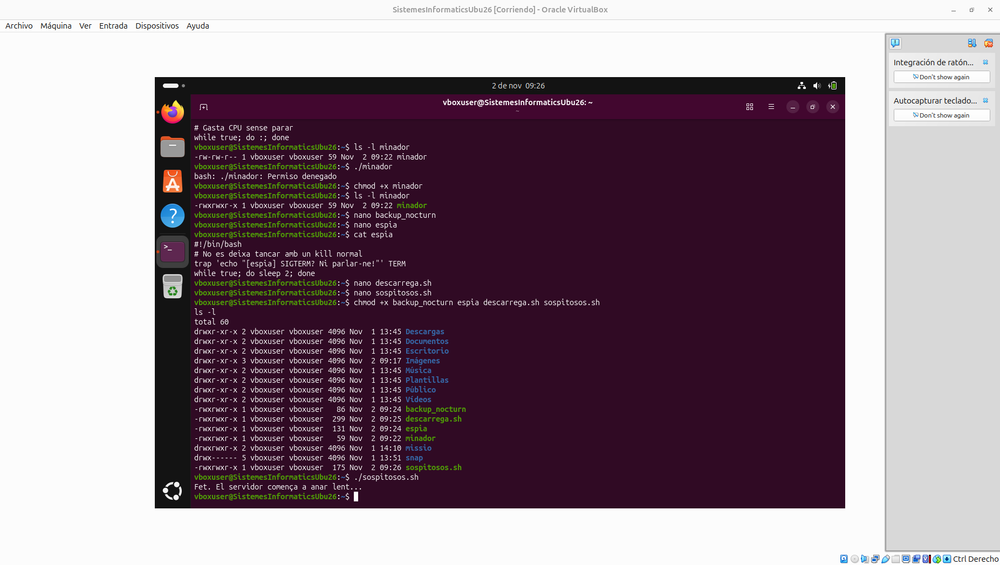
↑ Tornar a l'índex
1 Reconeixement · veure els processos
S'empra la comanda pstree -p $USER per visualitzar de manera gràfica i jeràrquica l'arbre de tots els processos en execució de l'usuari actual. A la imatge es comprova com els processos paràsits (backup_nocturn, espia i els dos minador) no pengen de la shell de la terminal, sinó que apareixen directament sota systemd (PID 1) perquè es van quedar orfes un cop el script llançador va finalitzar.
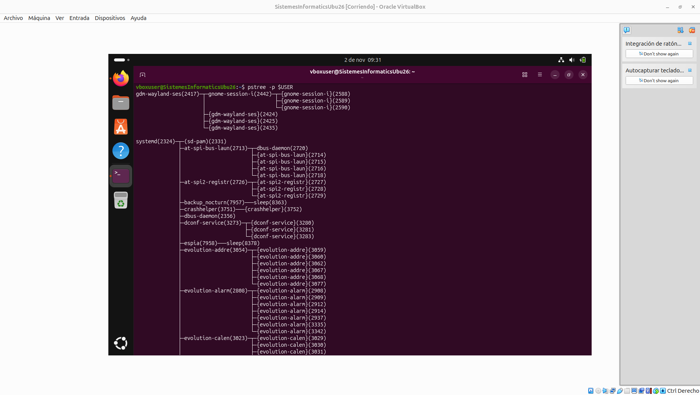
↑ Tornar a l'índex
2 Qui consumeix més?
S'executa la utilitat interactiva de monitoratge top per examinar en temps real l'estat del sistema i el consum de recursos. Prement la tecla P, la llista s'ordena per consum de CPU, destacant a la part superior els dos processos minador consumint al voltant d'un 49% de CPU cadascún degut a la limitació del nucli, mentre que a la capçalera es pot apreciar l'indicador de càrrega (load average) elevat.
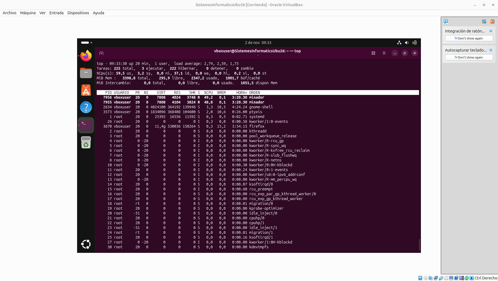
↑ Tornar a l'índex
3 Interrogatori · filtrar amb ps
Es fan servir filtres avançats de cerca com ps aux | grep [m]inador per evitar la línia paràsita del propi filtre, cerques directes amb pgrep i l'extracció de columnes específiques amb l'ordre ps -o pid,ppid,user,stat,etime,%cpu,comm -C per als diferents sospitosos. Això permet obtenir amb exactitud els identificadors (PID) i comprovar que el seu procés pare (PPID) és el PID 2324 corresponent a systemd.
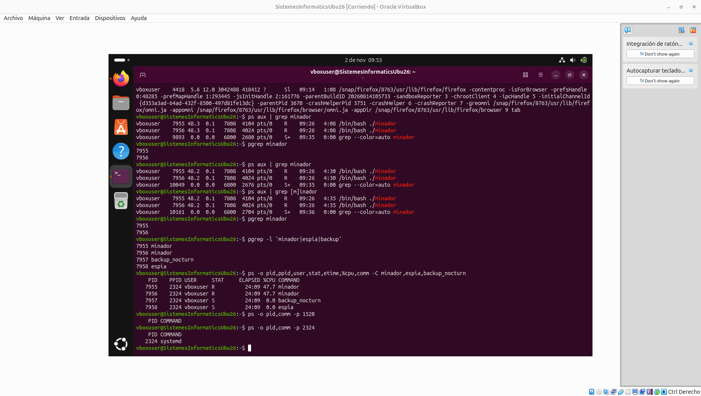
↑ Tornar a l'índex
4 La descàrrega urgent · primer i segon pla
4.1 S'utilitza la comanda watch -n 1 cat progres.txt a la terminal dreta (T2) per refrescar automàticament cada segon el contingut del fitxer de progrés de la descàrrega simulada ("Descarregant ubuntu.iso... 18% (64 s)"), permetent vigilar l'evolució i el percentatge de la tasca en temps real de manera continuada.
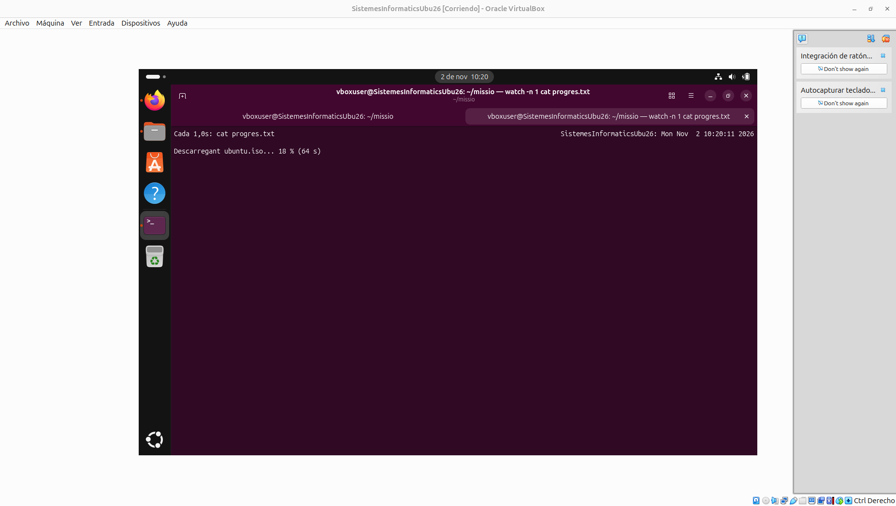
4.2 Mostra la seqüència al terminal T1 on s'atura temporalment la descàrrega amb la combinació Ctrl + Z (passant a estat Stopped), la consulta del treball mitjançant jobs -l per veure el seu número de treball i PID, i la seva reanudació i enviament definitiu al segon pla amb bg %1, la qual cosa allibera la terminal de treball principal.
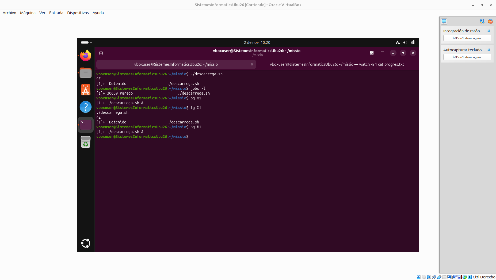
↑ Tornar a l'índex
5 Prioritat a la descàrrega
5.1 S'empra l'ordre top -p $(pgrep -d, 'minador|descarrega') per visualitzar i monitorar només aquells PID concrets. Es veu clarament reflectit l'efecte d'haver aplicat prèviament l'ordre d'administrador sudo renice -n -10 -p <PID> sobre el procés de descàrrega (PID 7899), el qual aconsegueix un ús de CPU del 98,7% gràcies a la prioritat NI -10, reduint considerablement el rendiment dels minadors.
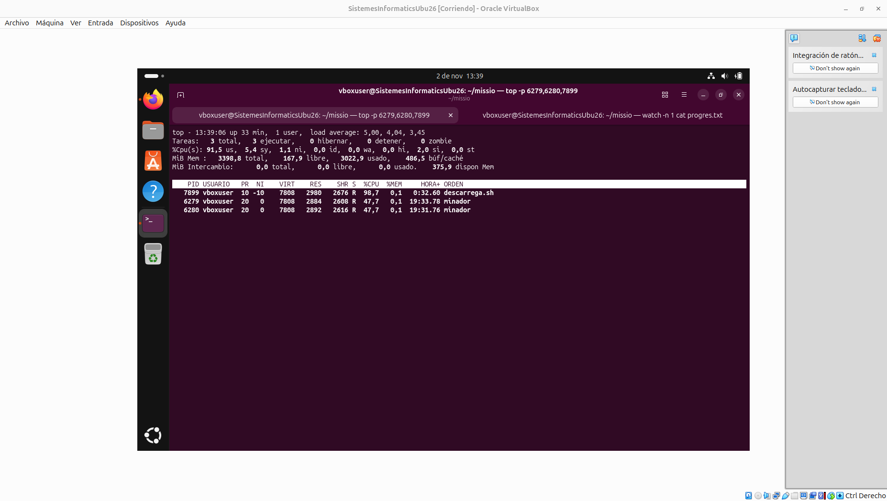
5.2 Mostra com a conseqüència directa de l'ajust de prioritat del nivell anterior, el percentatge de la descàrrega al fitxer progres.txt visualitzat a T2 ha avançat de manera accelerada fins al 75% ("Descarregant ubuntu.iso... 75% (67 s)") degut a haver rebut gairebé tot el potencial de càlcul de la CPU en detriment dels programes paràsits.
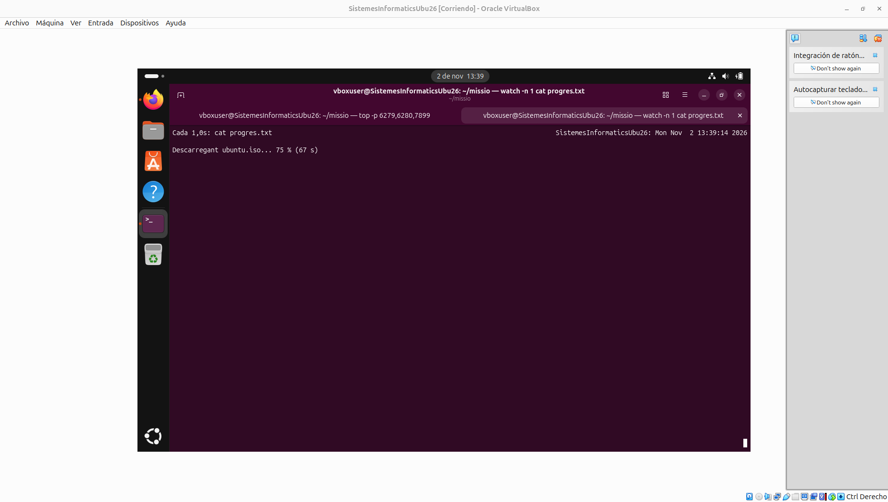
↑ Tornar a l'índex
6 Neutralitzar els intrusos
Es visualitza l'ús de kill per eliminar els minadors mitjançant la senyal SIGTERM, l'intent fallit d'aturar l'script espia (el qual intercepta l'avís mostrant el missatge de la trampa o trap), la resolució forçosa d'aquest últim mitjançant la senyal ininterrumpible kill -9 (SIGKILL), i finalment la congelació temporal (STOP) i reactivació (CONT) del procés legítim de còpia de seguretat backup_nocturn sense arribar a destruir-lo.
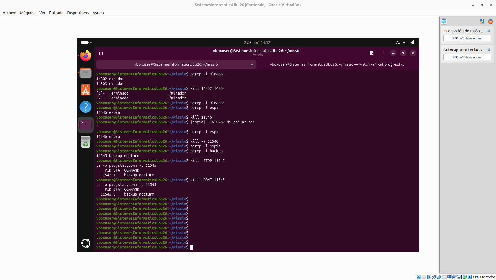
↑ Tornar a l'índex
7 Que la descàrrega no es perdi
7.1 Mostra el missatge final de confirmació "ubuntu.iso COMPLETADA en 62 s" generat per l'script descarrega.sh i reflectit al monitor watch de la terminal T2, comprovant així que la descàrrega ha conclòs correctament de manera íntegra sense patir interrupcions per tancaments previs de sessió.
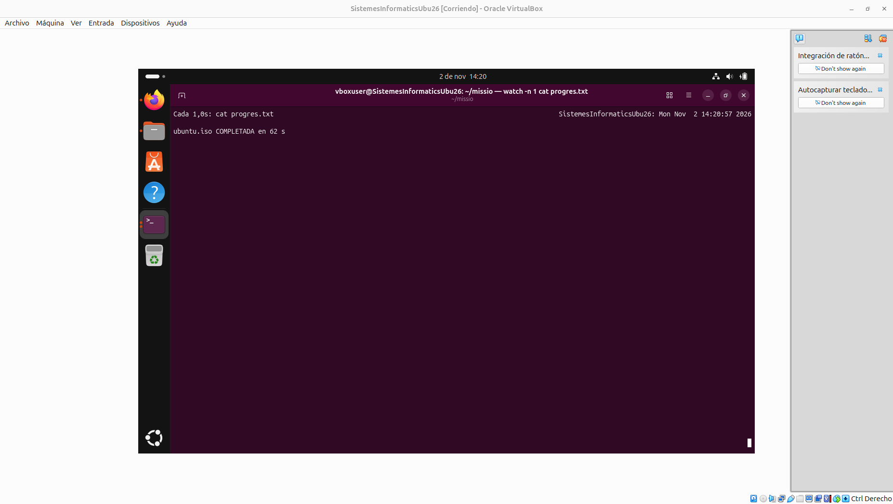
7.2 Mostra la sortida de l'ordre d'inspecció de l'arbre de processos pstree -ps $(pgrep descarrega), a través de la qual es comprova que, gràcies a l'ús previ de l'ordre nohup abans de tancar el terminal original, el procés de la descàrrega ha ignorat la senyal de tancament SIGHUP i ha estat adoptat de manera segura directament per systemd (PID 1).
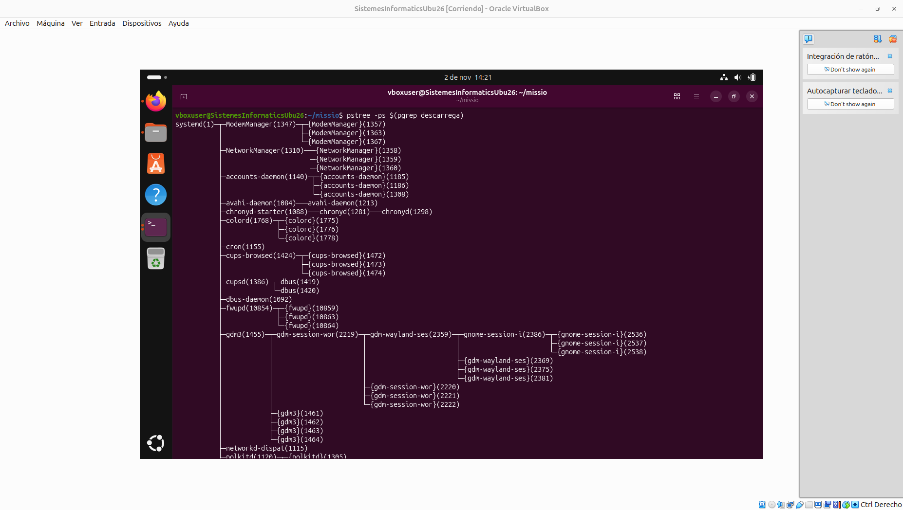
↑ Tornar a l'índex